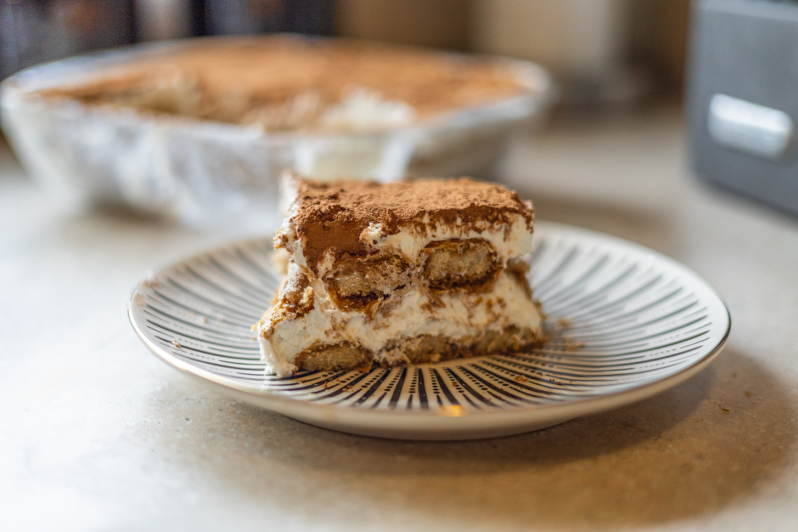
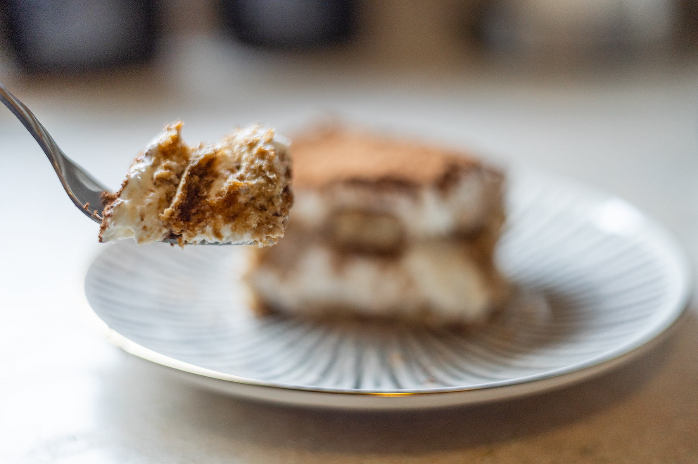
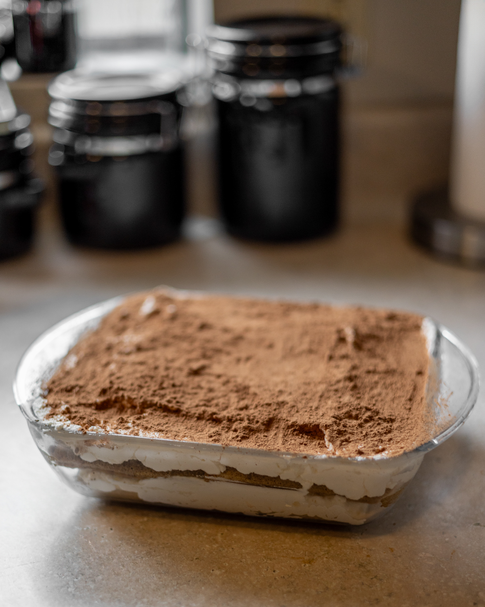

Tiramisu

Ingredients
- 2 cups heavy whipping cream
- 3/4 cup sugar
- 1 tbsp vanilla extract
- 8 oz mascarpone cheese, room temperature
- 1 cup strong brewed coffee or 3 shots of espresso with 3 ouces water, cooled
- 1 package of ladyfingers
- Cocoa powder for dusting
Instructions
- Whip the heavy cream: in a cold bowl, add sugar and vanilla extract and beat with a hand mixer until soft peakes form.
- In a separate bowl, beat the mascarpone cheese until smooth. Gently fold the whipped cream into the mascarpone until fully combined. Set aside.
- Pour coffe or espresso mixture into a shallow dish (like a pie pan). Quickly dip each ladyfinger into the coffee mixture, making sure they are just barely wet. It should still seem cripy and dry at this point, but will soften during the setting phase of the dessert.
- Layer the lady fingers into an 8 inch square dish. After the first layer, spread half of the cream mixture over the lady fingers. Then repeat with the remaining lady fingers and cream mixture.
- Dust the top with cocoa powder and refrigerate for at least 4 hours or overnight before serving. Store in the refrigerator for up to 3 days.

